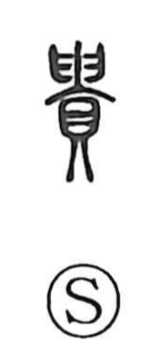

貴

Uncategorized
Kun: tattoi, toutoi, tattobu, toutobu | On: ki
precious ・ noble ・ valuable ・ high-ranking
Explanation
Shirakawa sees 貴 as a compound of 臼, the shape of both hands brought together, and 貝, a cowry shell. The character portrays a shell being offered up with both hands, capturing the act of handling something as precious. Although no archaic script form of this graph survives, the shell here is likely the koyasugai, a cowry associated with safe childbirth. Cowries from the southern seas were extraordinarily prized in northern China during the Yin and Zhou periods and, in the Zhou, even served as currency. From this background the word first meant what is sacred and exalted, and it later shifted to denote high social rank and noble standing.